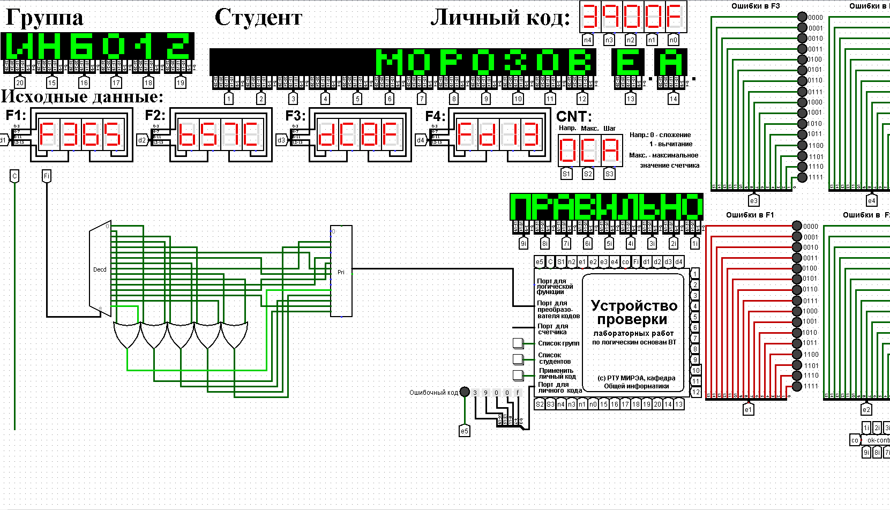

После восстановления таблицы истинности будет получена таблица на рисунке 1.
В данном случае в таблице присутствуют повторяющиеся коды, формируемые для разных исходных наборов (выделены одинаковыми цветами).
Таблица переходов для преобразователя кодов задана как совокупность четырех логических функций от четырех переменных в 16-теричной векторной форме. Иначе говоря, код, формируемый для некоторого входного набора, образуется как совокупность значений четырех функций для этого набора. Первая задаваемая функция описывает множество старших битов (третий разряд) для всех формируемых кодов, вторая функция описывает второй разряд, третья функция – первый разряд, и четвертая – нулевой. Восстановить таблицу переходов. По таблице переходов реализовать в лабораторном комплексе преобразователь кодов на основе дешифратора, шифратора и дополнительной логики «или».
Протестировать работу схемы и убедиться в ее правильности.
В соответствии с персональным вариантом имеются следующие функции:
После восстановления таблицы истинности будет получена таблица на рисунке 1.
В данном случае в таблице присутствуют повторяющиеся коды, формируемые для разных исходных наборов (выделены одинаковыми цветами).
Схема устройства строится непосредственно по таблице. Значения переменных «a», «b», «c», «d» указывают на номер выхода дешифратора, который необходимо подключить к некоторому входу шифратора. Номер входа шифратора определяется кодом из правой части таблицы истинности, который должен быть сформирован для данного входного набора значений переменных.
Если для нескольких разных наборов значений переменных должны быть получены одинаковые коды, то соответствующие выходы дешифратора объединяются через «или», а выход «или» уже подается на вход шифратора.
В результате получим схему, показанную на рисунке 2.
Тестирование доказало правильность работы схемы.
В ходе практической работы была восстановлена таблица истинности логических функций от четырех переменных в 16-теричной векторной форме. По таблице истинности в лабораторном комплексе реализован преобразователь кодов на основе дешифратора, шифратора и дополнительной логики «или».